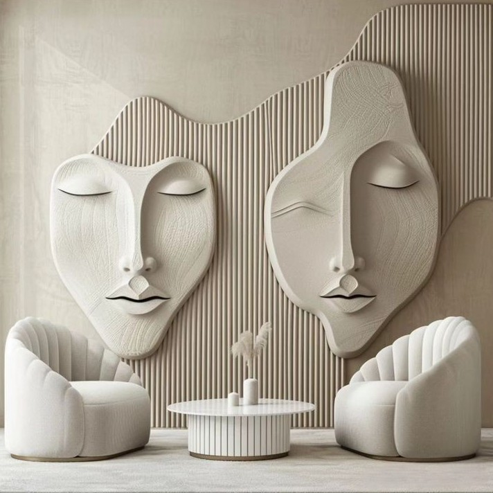

Индивидуальная терапия
Тревожность, поиск себя, самооценка. Исследуем причины внутреннего напряжения, учимся слышать свои потребности и опираться на собственные ценности — в вашем темпе, без оценок и давления.
Психологическая помощь · онлайн и очно
Бережное пространство, где можно быть собой. Разберёмся в том, что тревожит, найдём внутреннюю устойчивость и вернём ощущение контроля над жизнью.

Обо мне
Я — практикующий психолог с профильным высшим образованием и регулярной супервизией. Постоянно углубляю квалификацию: дополнительное обучение по работе с тревожными расстройствами, кризисными состояниями и терапии отношений.
В работе опираюсь на доказательные подходы и при этом верю, что главный инструмент терапии — живой человеческий контакт. Моя философия проста: у каждого человека уже есть ресурсы для изменений — задача психолога помочь их увидеть и научиться ими пользоваться.
Я не даю готовых советов и не оцениваю ваш выбор. Вместо этого — задаю вопросы, замечаю важное и иду рядом, пока вы находите собственные ответы.
5+
лет частной практики
500+
проведённых сессий
50 мин
длительность встречи
Валерия · психолог-консультант

Мой подход
Терапия — это не про «быстро починить», а про внимательное и уважительное исследование себя. Я создаю безопасное пространство, где можно говорить о любом — и быть услышанным без осуждения.
Всё, что происходит на сессиях, строго конфиденциально. Мы двигаемся в вашем темпе и опираемся на доказательные методы, подбирая техники под ваш запрос и личность.
Работаю онлайн из любой точки мира — вам понадобится только час времени и тихое место. Очные встречи возможны по договорённости.
Услуги
Каждый запрос уникален. Ниже — основные направления, с которыми мы можем работать вместе.
Тревожность, поиск себя, самооценка. Исследуем причины внутреннего напряжения, учимся слышать свои потребности и опираться на собственные ценности — в вашем темпе, без оценок и давления.
Усталость, эмоциональное истощение, утрата баланса. Восстанавливаем ресурс, выстраиваем устойчивые границы между работой и жизнью, возвращаем энергию и интерес к тому, что важно.
Конфликты, личные границы, неопределённость. Разбираем повторяющиеся сценарии, учимся говорить о чувствах и выстраивать отношения, в которых есть место и близости, и свободе.
Контакты и запись
Напишите мне — обсудим ваш запрос, подберём удобное время и формат встречи. Первый шаг часто самый сложный, но именно с него начинаются перемены.